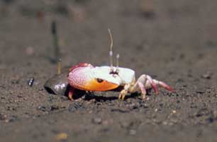
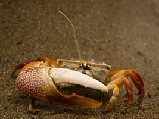

Female Uca stylifera feeding (with Uca beebei in fore- and background) 19 sec., 352 x 240, MP4
Male Uca stylifera waving 29 sec., 352 x 240, MP4
Male Uca stylifera waving 40 sec., 352 x 240, MP4
Male Uca stylifera fighting 40 sec., 352 x 240, MP4
Male Uca stylifera waving and fighting 2:27 min., 352 x 240, MP4
Surface mating in Uca stylifera 1:42 min., 352 x 240, MP4
Surface mating in Uca stylifera 2:03 min., 352 x 240, MP4
Altevogt, R. (1969) Ein sexualethologischer Isolationsmechanismus bei sympatrischen Uca -Arten (Ocypodidae) des Ostpazifik. forma et functio 1:238-249. {An ethological reproductive isolation mechanism in sympatric species of Uca (Ocypodidae) of the Eastern Pacific} Altevogt, R. (1972) Physiological inter-relations of display and locomotion in fiddler crabs: An evolutionary aspect. Journal of the Marine Biological Association of India 14(2):456-467. Barnwell, F.H. (1968) The role of rhythmic systems in the adaptation of fiddler crabs to the intertidal zone. American Zoologist 8(3):569-583. Barnwell, F.H., and W.A. Szelistowski (1985) Twenty-one species of fiddler crabs (genus Uca ) from a small tidal river on the Pacific coast of Costa Rica. American Zoologist 25(4):86A. Bott, R. (1954) Dekapoden (Crustacea) aus El Salvador. 1. Winkerkrabben (Uca ). Senckenbergiana biologica 35(3-4):155-180. Crane, J. (1941) Eastern Pacific Expeditions of the New York Zoological Society. XXVI. Crabs of the genus Uca from the west coast of Central America. Zoologica NY 26:145-208. Crane, J. (1944) On the color changes of fiddler crabs (genus Uca ) in the field. Zoologica NY 29:161-168. Crane, J. (1947) Eastern Pacific expeditions of the New York Zoological Society. XXXVIII. Intertidal brachygnathous crabs from the west coast of tropical America with special reference to ecology. Zoologica 32(2):69-95. Crane, J. (1957) Basic patterns of display in fiddler crabs (Ocypodidae, Genus Uca ). Zoologica NY 42:69-82. Dominguez Alonso, P. (2008) A new fiddler crab (genus Uca , Ocypodidae) from the Plio-Pleistocene from the Pacific coast of Honduras. Ameghiniana 45(4):663-676. Kingsley, J.S. (1880) Carcinological notes, No. II.-Revision of the Gelasimi. Proceedings of the Academy of Natural Sciences of Philadelphia 1880(1):135-155. Milne Edwards, H. (1837) Les Crustaces. Pp. 278 in Le Regne animal distribue d'apres son organisation , G. Cuvier, ed., Volume XVII. Paris Milne Edwards, H. (1852) Observations sur les affinités zoologiques et la classification naturelle des crustacés. Annales des Sciences Naturelles. Zoologie (Série 3) 18:109-166. Milne Edwards, H. (1854) Mélanges carcinologiques . Paris: L. Martinet. Oliveira, L.P.H.d. (1939) Contribuição ao conhecimento dos crustaceos do Rio de Janeiro. Genero Uca (Decapoda: Ocypodidae). Memórias do Instituto Oswaldo Cruz 34(1):115-148. Pesta, O. (1931) Ergebnisse der Österreichischen biologischen Costa-Rica-Expedition 1930. I. Crustacea Decapoda aus Costa-Rica. Annalen des Naturhistorischen Museums in Wien 45:173-181. Rathbun, M.J. (1918) The grapsoid crabs of America. United States National Museum Bulletin 97:1-461. Smith, S.I. (1870) Notes on American Crustacea. No. 1. Ocypodoidea. Transactions of the Connecticut Academy of Arts and Science 2:113-176. von Hagen, H.-O. (1968) Studien an peruanischen Winkerkrabben (Uca ). Zoologische Jahrbücher. Abteilung für Systematik, Ökologie und Geographie der Tiere 95(2):395-468. {Studies of Peruvian fiddler-crabs (Uca )} von Hagen, H.-O. (1970) Verwandtschaftliche Gruppierung und Verbreitung der Karibischen Winkerkrabben (Ocypodidae, Gattung Uca ). Zoologische Mededelingen 44(15):217-235.